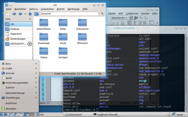

LXDE Fenstermanager wechseln
Dieser Artikel wurde für die folgenden Ubuntu-Versionen getestet:
Ubuntu 16.04 Xenial Xerus
Ubuntu 14.04 Trusty Tahr
Zum Verständnis dieses Artikels sind folgende Seiten hilfreich:
LXDE ist eine sehr ressourcenschonende Deskopumgebung, die mit dem zum Einsatz kommenden Fenstermanager Openbox bewusst auf Desktopeffekte verzichtet. Wer dennoch nicht auf Schatten und Transparenz und damit ein bisschen "Eye-Candy" verzichten möchte, hat folgende Möglichkeiten:
Leichtgewichtiges Compositing mit Hilfe eines externen Programms hinzufügen. Dies ist in m Artikel xcompmgr beschrieben. Leider arbeitet diese Lösungen je nach Anforderungsprofil nicht ganz fehlerfrei. Eine Weiterentwicklung von xcompmgr stellt Compton dar.
Einsatz von Compiz, wenn die Hardware 3D-Beschleunigung ermöglicht.
den Fenstermanager durch einen anderen austauschen, der von sich aus Compositing unterstützt. Hier bieten sich KWin aus KDE oder Xfwm4 aus Xfce an.
In diesem Artikel soll die dritte Möglichkeit (für beide Fenstermanager) beschrieben werden. Der resultierende Desktop ist vor allem beim Einsatz von KWin nicht mehr ganz so ressourcenschonend wie das Original mit Openbox, aber immer noch deutlich leichtgewichtiger als die "großen" Desktop-Umgebungen KDE, GNOME 3 oder Unity.
|  |
| Lubuntu 12.04 mit KWin im KDE-Look Oxygen |
| Lubuntu 12.04 mit Xfwm4 |
Voraussetzungen¶
Die Grafikkarte muss Compositing unterstützen. Dies findet man mit folgendem Befehl [1] heraus:
glxinfo | grep 'direct rendering'
Erhält man folgende Ausgabe, so hat die Grafikkarte voraussichtlich Composite-Fähigkeiten:
direct rendering: Yes
KWin¶
Ausgegangen wird von einem frisch installierten Lubuntu.
Installation¶
Alle erforderlichen Pakete sind in den offiziellen Paketquellen enthalten. Als erstes muss der Fenstermanager installiert [2] werden.
kde-window-manager (KWin)
kde-l10n-de (für deutsche Einstellungsdialoge)
 mit apturl
mit apturl
Paketliste zum Kopieren:
sudo apt-get install kde-window-manager kde-l10n-de
sudo aptitude install kde-window-manager kde-l10n-de
Optional ist die Installation der folgenden Pakete, die ein konsistentes Erscheinungsbild der KDE-Optik ermöglichen. Sie werden nur benötigt, wenn man den weiter unten zu findenden Punkt über die Anpassung an die KDE-Optik abarbeiten möchte.
gtk2-engines-oxygen (Oxygen-Stil für GTK+)
gtk3-engines-oxygen (Oxygen-Stil für GTK3-Anwendungen)
kubuntu-default-settings (Voreinstellungen von Kubuntu)
systemsettings (Dialog für die KDE-Systemeinstellungen)
mit apturl
Paketliste zum Kopieren:
sudo apt-get install gtk2-engines-oxygen gtk3-engines-oxygen kubuntu-default-settings systemsettings
sudo aptitude install gtk2-engines-oxygen gtk3-engines-oxygen kubuntu-default-settings systemsettings
Ersetzen des Fenstermanagers¶
Hat man die Pakete installiert, muss man LXDE mitteilen, dass es zukünftig KWin als Fenstermanager einsetzen soll. Den erforderlichen Dialog findet man im Menü unter "Einstellungen -> Desktop-Sitzungseinstellungen", und wählt in dem sich öffnenden Fenster den Reiter "Erweiterte Optionen". Dort löscht man "openbox-lubuntu" und ersetzt es durch "kwin" (Kleinschreibung unbedingt beachten!). Anschließend meldet man sich ab und wieder an. Alle Programme werden nun im KDE-Fenstermanager ausgeführt.
Vorgehen ab Lubuntu 13.10¶
Der Window Manager kann grafisch über das seit Ubuntu 13.10 in den offiziellen Paketquellen enthaltene Programm "Desktop Session Settings" vorgenommen werden. Dazu muss dieses installiert werden:
lxsession-edit (universe)
mit apturl
Paketliste zum Kopieren:
sudo apt-get install lxsession-edit
sudo aptitude install lxsession-edit
Eine Änderung des Fenstermanagers ist so auch zur Laufzeit möglich.
Einstellen der Anzahl virtueller Desktops¶
Nach dem Wechsel des Fenstermanagers zu KWin steht zunächst nur ein virtueller Desktop zu Verfügung. Will man die Anzahl per Rechtsklick auf dem Pager im LXPanel erhöhen, erhält man eine Fehlermeldung. Durch Drücken von Strg + F8 erhält man jedoch eine Übersicht der virtuellen Desktops und kann dann mittels Klick auf das grüne Pluszeichen rechts unten weitere Desktops hinzufügen. Danach hat man auch im Pager die entsprechende Anzahl an Feldern.
Hinweis:
Es stehen sofort zwei virtuelle Desktops zur Verfügung, wenn man das oben angegebene optionale Paket kubuntu-default-settings installiert hat.
Anpassen an das Aussehen von KDE¶
Die hellgraue Standardoptik von KWin passt schon recht gut zum Standard-Theme von Lubuntu. Wer aber eine möglichst nahtlose KDE-Optik haben will, kann noch folgende Arbeiten erledigen.
Unter "Einstellungen -> Erscheinungsbild anpassen" wählt man "oxygen-gtk" aus, um alle GTK+-Elemente der KDE-Optik anzupassen. Die Schriftgröße in den Menüs etc. wird durch das Paket kubuntu-default-settings automatisch angepasst. Die Farbe des Fensterrahmens fällt aber noch zu hell aus und hat keinen Farbverlauf. Wer dies noch ändern will, geht in den KDE-Systemeinstellungen auf "Erscheinungsbild der Arbeitsfläche" und klickt auf "Fensterdekoration einrichten...". Dort stellt man in den Feineinstellungen unter "Hintergrundstil" auf "radialer Farbverlauf" um. Man wechselt dann wieder in die Übersicht und wählt "Erscheinungsbild von Anwendungen". Unter "Farben" findet man die Lasche "Farbauswahl". Dort klickt man auf das graue Feld neben "Fensterhintergrund". In dem sich öffnenden Dialog regelt man einen der Farbregler eine Stufe rauf und wieder zurück, bestätigt dann und verlässt die KDE-Systemeinstellungen. Nach Neuanmeldung sollten alle sich öffnenden Fenster ein nahtloses Design aufweisen.
KWin bietet eine Vielzahl an weiteren Einstellungsmöglichkeiten (so z.B. eine sehr detaillierte Einstellung der Desktopeffekte), die im Artikel über KWin erläutert sind.
Xfwm4¶
Diese Variante kommt z.B. bei Peppermint OS in der Version 5 zum Einsatz. Im Folgenden wird ebenfalls von einem frisch installierten Lubuntu ausgegangen.
Installation¶
Auch hier findet man sämtliche Pakete in den offiziellen Paketquellen. Folgende drei Pakete sollten installiert werden:
xfwm4 (universe, der Fenstermanager selbst)
xfwm4-themes (universe, zugehörige Themes)
xfce4-settings (universe, Xfce4-Einstellungsdialog)
mit apturl
Paketliste zum Kopieren:
sudo apt-get install xfwm4 xfwm4-themes xfce4-settings
sudo aptitude install xfwm4 xfwm4-themes xfce4-settings
Ersetzen des Fenstermanagers¶
Das Ersetzen von Openbox durch Xfwm4 geschieht analog zum Ersetzen mit KWin. Man ersetzt hier "openbox-lubuntu" mit "xfwm4" (Kleinschreibung unbedingt beachten). Nach einer Neuanmeldung sollten sich nun alle Fenster mit dem Fenstermanager von Xfce öffnen. Allerdings sieht man noch keine Compositing-Effekte wie Schatten und Transparenz.
Aktivierung des Compositing und andere Einstellungen¶
Im Artikel über die Xfce Composite-Effekte sind die Einstellungsmöglichkeiten für das Compositing beschrieben. Im Einstellungsmanager für die Xfce-Einstellungen lässt sich auch das Erscheinungsbild der Fensterrahmen anpassen. Der Menüpunkt "Erscheinungsbild" für die Anpassung des Erscheinungsbildes der Fensterinhalte funktioniert allerdings nicht. Dies muss man mit LXappearance erledigen.
Der Einstellungsmanager für Xfce ist im LXDE-Menü ausgeblendet. Man erreicht ihn ohne weitere Nacharbeiten, indem man im LXDE-Menü auf "Ausführen" klickt und in das sich öffnende Fenster folgenden Befehl eingibt:
xfce4-settings-manager
Will man ihn im LXDE-Menü finden, so muss man mit Root-Rechten [4] in der Datei /usr/share/applications/xfce-settings-manager.desktop die folgende Zeile um LXDE ergänzen:
1 | OnlyShowIn=Xfce;LXDE; |
Man findet ihn dann im LXDE-Menü unter "Einstellungen -> Einstellungen"
Systemweit wechseln für alle Nutzer¶
Will man den Fenstermanager nicht nur für den angemeldeten Nutzer, sondern systemweit wechseln, so öffnet [3] man mit Root-Rechten [4] die Datei /etc/xdg/lxsession/Lubuntu/desktop.conf und ändert sie entsprechend dem oben beschriebenen Vorgehen in Lubuntu 12.10.
Problembehebung¶
Tastenkürzel unter xfwm4¶
Xfwm4 kennt zwar eine Reihe von vordefinierten Tastenkürzeln, verwaltet aber neue (= benutzerdefinierte) über das Programm xfsettingsd. Dieses muss daher zum Autostart hinzugefügt werden, bevor man neue Kürzel praktisch nutzen kann. Praktisch erfolgreich getestet wurde die Variante, die systemweite Autostart-Datei /etc/xdg/lxsession/Lubuntu nach ~/.conf/lxsession/Lubuntu zu kopieren und mit einem Editor folgende Zeile zu ergänzen:
@xfsettingsd
Angelegt werden benutzerdefinierte Tastenkürzel über die Xfce-Einstellungen via "Einstellungen -> Einstellungen - > Tastatur -> Tastenkürzel für Anwendungen". Ein weiteres Problem kann die Nutzung der Tastenkombination Alt + F2 darstellen (siehe auch Programme starten). Möchte man den Standard-Befehl (von Xfce) xfrun4 nutzen, benötigt man noch das Paket:
xfce4-utils
mit apturl
Paketliste zum Kopieren:
sudo apt-get install xfce4-utils
sudo aptitude install xfce4-utils
 Übersichtsartikel
Übersichtsartikel- Erstellt mit Inyoka
-
 2004 – 2017 ubuntuusers.de • Einige Rechte vorbehalten
2004 – 2017 ubuntuusers.de • Einige Rechte vorbehalten
Lizenz • Kontakt • Datenschutz • Impressum • Serverstatus -
Serverhousing gespendet von